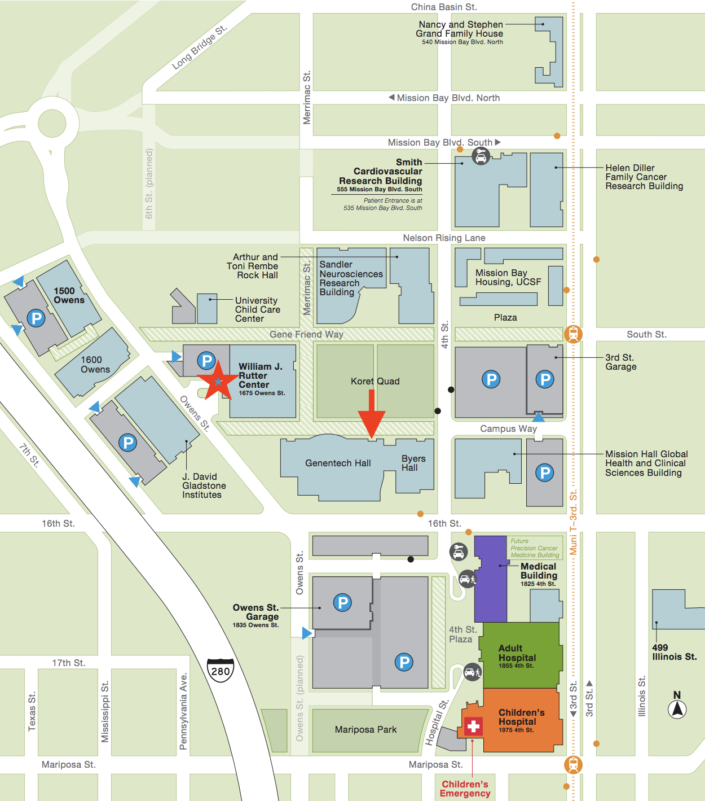

THeLab: Torgerson + Hernandez Lab
Contact THeLab
Dara Torgerson, PhD
Genentech Hall Room N472G
600 16th Street
Box #2240.
San Francisco, CA 94143
E: dara.torgerson (at) ucsf.edu
Ryan Hernandez, PhD
Genentech Hall Room N472F
600 16th Street
Box #2240.
San Francisco, CA 94143
E: ryan.hernandez (at) ucsf.edu
T: (415) 476-3784
Directions to THeLab
The Mission Bay Campus can be reached:
Public Transportation:
- Option 1: Exit SF Bay Ferry at Downtown San Francisco. Walk to Rincon Center (83 Mission St.) and take Lilac Shuttle to Mission Bay.
- Option 2: Exit BART at the 16th St Station and wait for the free UCSF Red shuttle (weekdays only) that stops directly outside what was once a Burger King and now has lovely graffiti.
- Option 3: Exit BART at the 16th St Station and take the 22 Muni Bus towards Mission Bay. Exit at 16th and 4th.
- Option 4: Exit BART at the Powell St Station and walk to the Union Square/Market St. MUNI station and then take the MUNI T-line inbound to Sunnydale. Exit at the UCSF/Chase Center stop on 3rd Street.
- Option 5: Exit Caltrain and then walk along 4th St for about 15 minutes until arriving at UCSF Mission Bay.
- Option 6: There are many different UCSF Shuttle routes that connect to the Mission Bay campus from various parts of the city (weekdays only).
Car:
- We are at 600 16th Street, between Owens St. and 4th St. There are two UCSF parking garagesexternal site (opens in a new window): UCSF Rutter Center Garageexternal site (opens in a new window), and UCSF Third Street Garageexternal site (opens in a new window). Please park in one of the garages and not in the surface lots.
- If you are being dropped off (e.g. by a rideshare service), use 1675 Owens St, San Francisco, CA 94158 as the destination address. There is a convenient parking circle (red star on map below) for drop-off.
Once on campus, proceed to Genentech Hall:
- You must enter Genentech Hall from the Koret Quad side (Red arrow on the map).
- Sign in at security for a meeting with Dr. Ryan Hernandez (Office - Genentech Hall N472F) or Dr. Dara Torgerson (Office - Genentech Hall N472G).
- Take the elevator or staircase to the 4th floor.
- Walk west down the hall. The large windows facing the courtyard will be on your right. If the floor color changes to grey, you have gone the wrong way and are now in Byers Hall. Turn around and walk back towards Genentech Hall.
- Keep walking west to the end of the hall, and make a right (north) at the last intersection just before you reach the window.
- Head down the hallway until you find a breakroom at the far corner.
- Enter the office area through the clear doors straight ahead. Ryan's office is straight ahead behind the second glass door, and Dara's office is on the left (adjacent to Ryan's office).
- THeLab computational area is to the left after passing through the breakroom near N476D.
